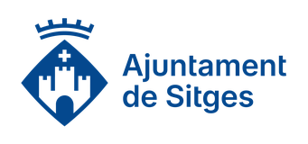
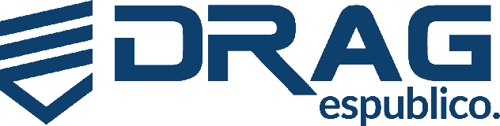
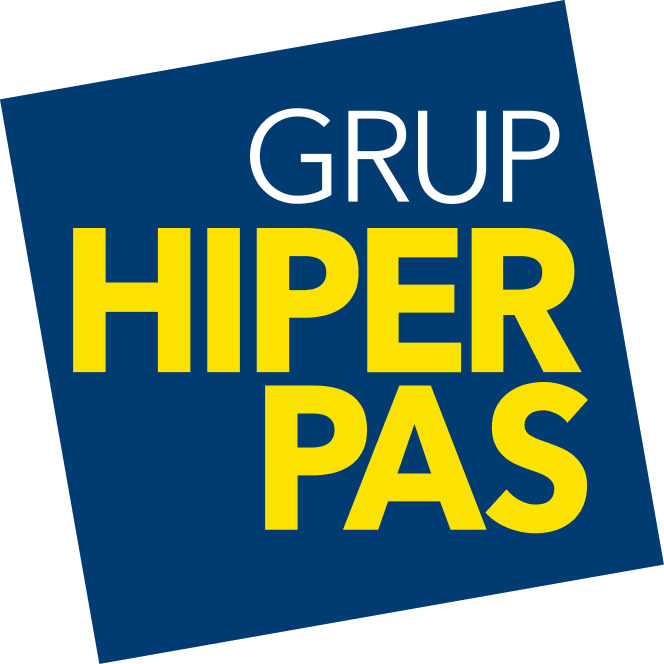
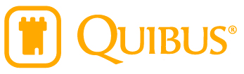
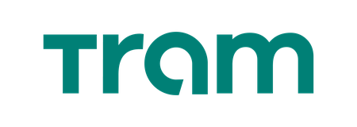
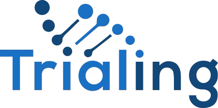

Virtual SOC
Monitorització, correlació i gestió d’esdeveniments en endpoints, xarxa, identitats i cloud sota un únic punt de control.
- SIEM as a Service
- Threat hunting i alertes intel·ligents
- Resposta coordinada davant incidents
Barcelona · Andorra · Operació gestionada
Protegim empreses que no poden parar: cloud, VSOC, resposta, backups, IA aplicada i direcció de seguretat operats per un equip tècnic sènior.
Tria per necessitat
VSOC, SIEM, alertes útils, revisió d’esdeveniments i resposta coordinada.
Activar VSOC 02Cloud propi, hardening, monitorització, backups i operació gestionada.
Revisar infraestructura 03Backups xifrats, Disaster Recovery, proves de restauració i passos clars per recuperar el servei.
Dissenyar continuïtat 04Automatització, assistents interns, anàlisi de dades i processos més eficients.
Dissenyar pla d’IAEl nostre enfocament
BlackDogs combina DevOps, infraestructura gestionada i ciberseguretat defensiva per reduir riscos sense frenar el negoci. Treballem com a equip boutique: propers, tècnics i orientats a problemes reals.
Portfolio
Monitorització, correlació i gestió d’esdeveniments en endpoints, xarxa, identitats i cloud sota un únic punt de control.
Direcció de ciberseguretat com a servei per a organitzacions que necessiten lideratge expert sense incorporar un CISO intern a temps complet.
Contenció, anàlisi, recuperació i millora posterior per reduir l’impacte d’atacs, fallades crítiques o exposicions inesperades.
Avaluem infraestructura, aplicacions, cloud i processos per identificar debilitats i prioritzar correccions amb impacte real.
Còpies xifrades, replicació automatitzada i recuperació dissenyada per a dades crítiques en entorns distribuïts i 24x7.
Ajudem a introduir intel·ligència artificial on aporta eficiència real: operacions, suport, dades, seguretat i automatització interna.
Serveis gestionats
Incorpora direcció i especialistes sense ampliar plantilla: pagues pel criteri i l'execució, no per la cadira.
Direcció tecnològica: arquitectura, roadmap, equip, proveïdors i decisions de producte amb visió de negoci.
Direcció de seguretat: polítiques, gestió de riscos, compliment (ENS, ISO 27001) i resposta davant incidents.
Automatització, CI/CD, infraestructura com a codi, observabilitat i desplegaments fiables a qualsevol cloud.
Especialista a demanda per a auditories, hardening, revisió d'arquitectura i acompanyament tècnic continu.
Infraestructura BlackDogs
Proveïm infraestructura d’alt rendiment sobre el nostre cloud propi, construït sobre XenServer: discos NVMe, CPUs d’alta velocitat i escalat de recursos sota demanda. L’operem d’extrem a extrem per garantir disponibilitat, rendiment, continuïtat i càrregues d’IA, amb les teves dades sempre sota el teu control.
Resiliència
Quan un atac xifra el teu entorn, la teva empresa val el que valgui la seva última còpia. Dissenyem, operem i vigilem l'última línia de defensa de la teva informació perquè sempre existeixi un punt de partida íntegre des d'on recuperar-ho tot.
Servidors, màquines virtuals, bases de dades, llocs de treball i núvol: Microsoft 365, Google Workspace, Amazon S3 i qualsevol altre repositori cloud.
Les teves còpies viuen en cabines pròpies amb discos NVMe, xifrades en trànsit i en repòs. Restauracions ràpides quan cada minut compta.
Versions immutables que un atacant no pot xifrar, alterar ni esborrar, amb detecció primerenca de xifrats i canvis anòmals a les dades.
Monitorem cada tasca de còpia i provem la recuperació de forma periòdica. Un backup només compta si es restaura: el nostre es restaura.
Nova divisió
La intel·ligència artificial només aporta valor si es connecta amb processos reals. A BlackDogs ajudem a identificar on automatitzar, com integrar dades i quins casos d’ús tenen retorn mesurable.
Reduïm treball manual en suport, operacions, reporting, documentació i tasques repetitives.
Detectem ineficiències, optimitzem recursos cloud i accelerem tasques que consumeixen temps d’equip.
Creem assistents segurs sobre documentació, procediments, tickets, contractes o bases de coneixement.
Integram permisos, privacitat, traçabilitat i control perquè la IA no es converteixi en un nou risc.
Mètode
Inventari d’actius, exposició, criticitat, dependències, dades i responsables.
Riscos reals, deute tècnic, continuïtat, compliment i capacitat de resposta.
Monitorització, hardening, backups, automatització i gestió diària d’incidents.
Informes clars, revisions periòdiques, simulacres i millores prioritzades.
Compliment
Preparem, implantem i acompanyem la teva organització en els marcs i certificacions que exigeix el teu mercat: de l'anàlisi inicial de bretxes a l'auditoria final.
Certificació en nivells bàsic, mitjà i alt seguint les guies CCN-CERT. Imprescindible per treballar amb l'administració pública espanyola.
Implantació del SGSI complet: anàlisi de riscos, controls de l'Annex A, documentació i acompanyament en l'auditoria de certificació.
Informes Type I i Type II sobre seguretat, disponibilitat i confidencialitat. La referència per a clients corporatius i mercat americà.
Plans de contingència, objectius RTO/RPO i recuperació provada: que un incident no aturi la teva operació.
Adequació per a entitats essencials i importants: governança, gestió de riscos, cadena de subministrament i notificació d'incidents.
Registre de tractaments, avaluacions d'impacte, mesures tècniques i organitzatives i resposta davant bretxes de dades.
Confien en nosaltres
De la indústria a l'esport, de la salut a l'administració pública: organitzacions que necessiten seguretat, disponibilitat i continuïtat reals.







Partners tecnològics
Integrem, despleguem i operem solucions dels principals fabricants de ciberseguretat.
Presència
Operem des de Barcelona i Andorra per a organitzacions que necessiten un partner tècnic proper, disponible i fàcil d’integrar amb els seus equips.
Contacte
Explica’ns què necessites protegir, operar o recuperar. Et respondrà un especialista de BlackDogs.